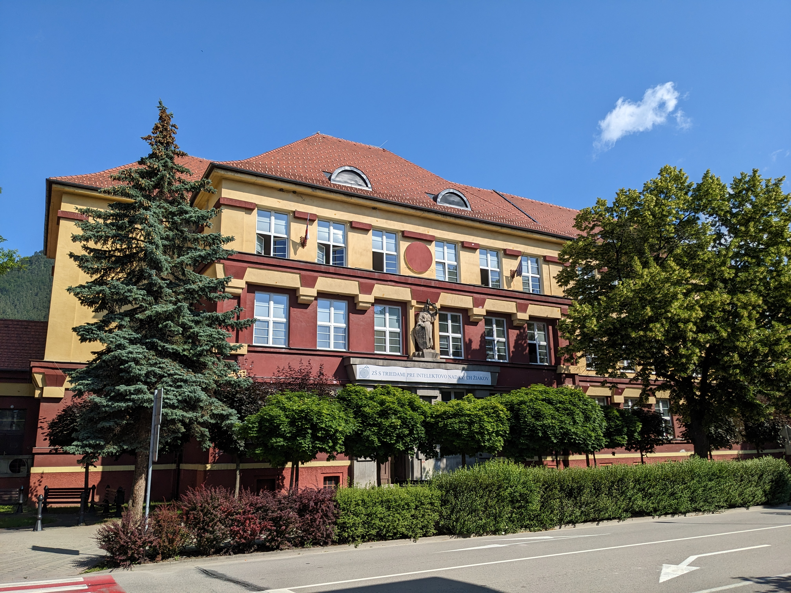
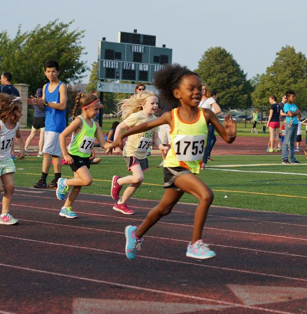
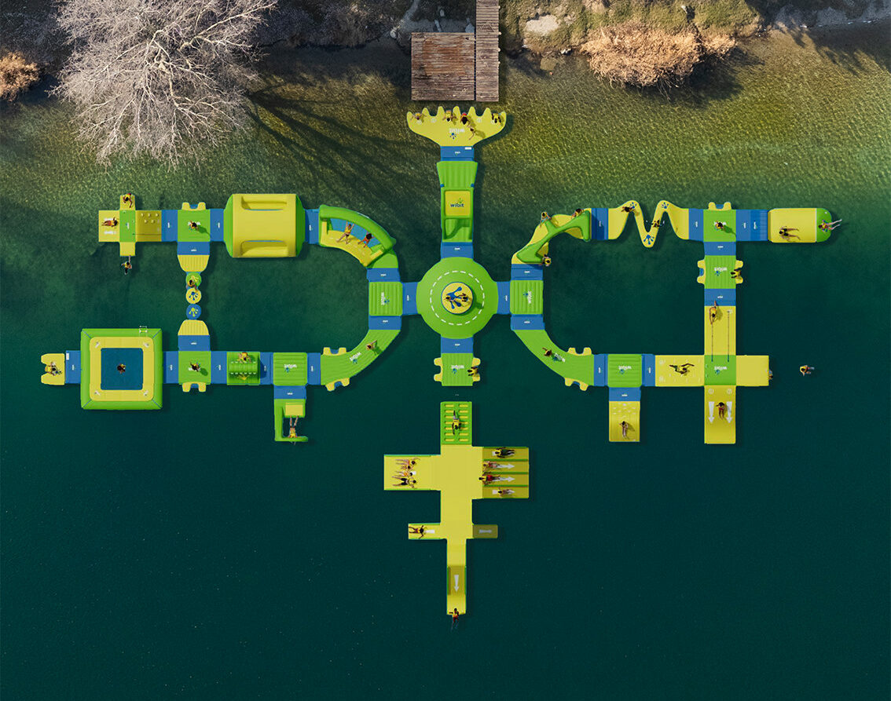

Aktívne prostredie a športoviská

Atletický oválAtletická dráha ZŠ Tupolevova
 Bežecká trasa
Bežecká trasaSad Janka Kráľa

Bežecká trasaPetržalská hrádza

Bežecký okruhOkruh Veľký Draždiak
 Trasa
TrasaChorvátske rameno